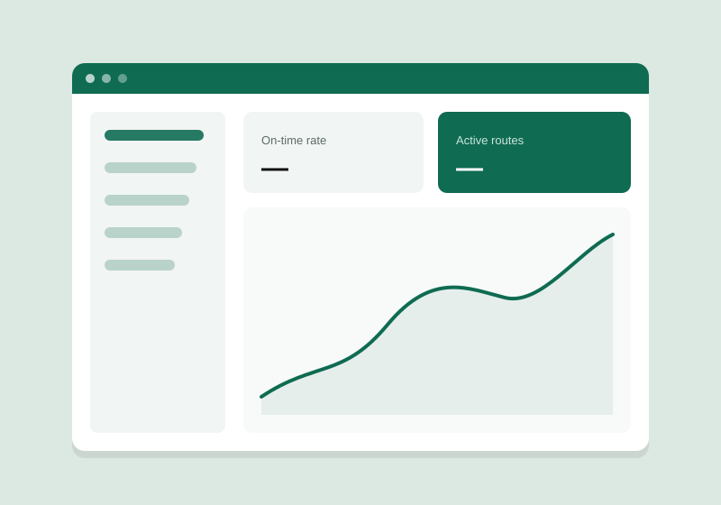
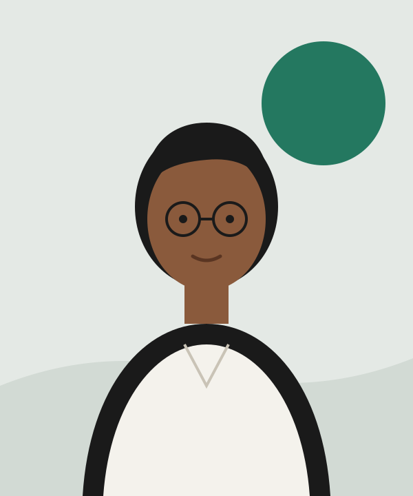
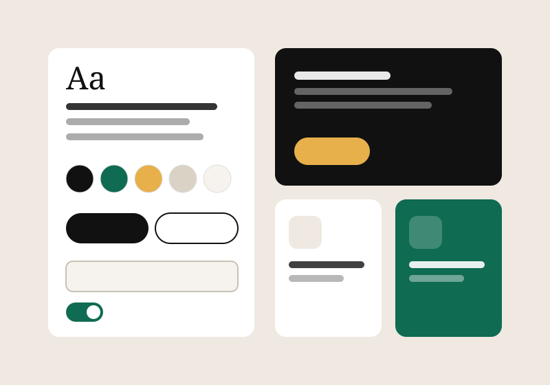
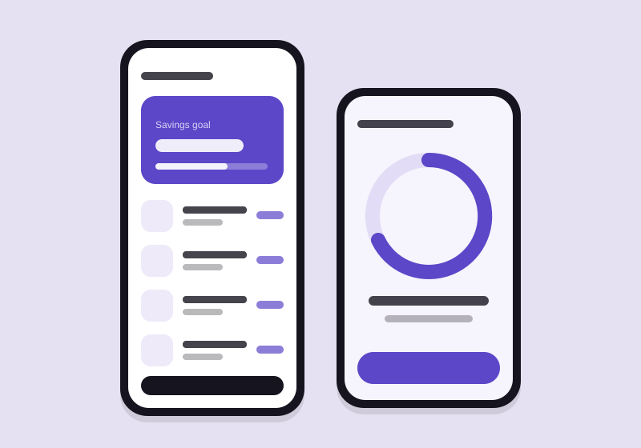
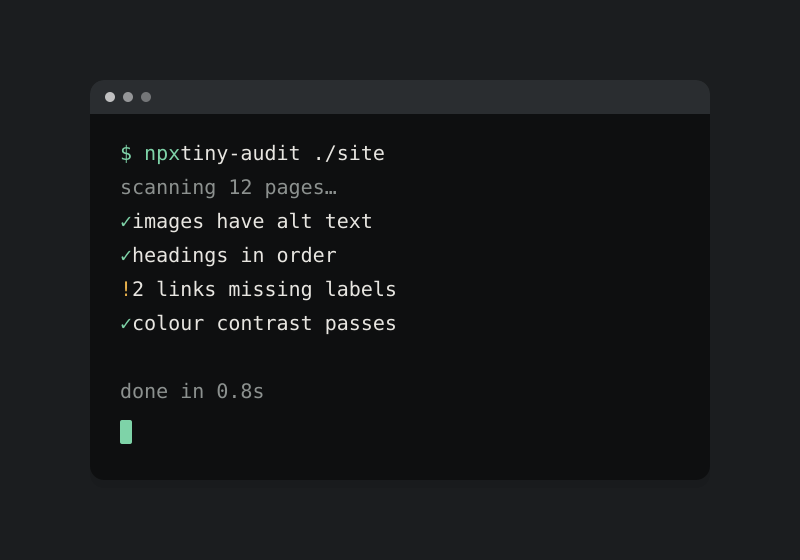
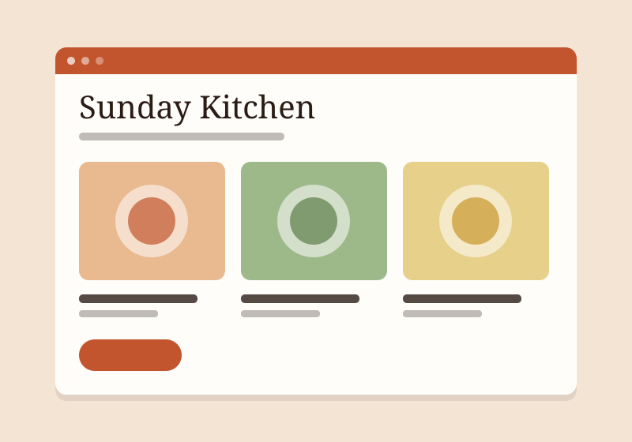
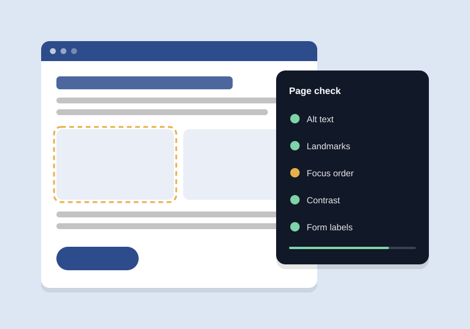

Transit operations dashboard
A real-time dashboard that helps a city bus operator spot delays and rebalance routes from one screen.
Open to full-time roles & select freelance work
Frontend engineer focused on accessible design systems, performance and the small details that make software feel considered.

I’m a frontend engineer who enjoys the space where design meets code — turning rough ideas into interfaces that are clear, quick and pleasant to use.
Over the past few years I’ve worked on transport dashboards, consumer finance apps and internal tools, usually as the person who bridges product design and engineering. I care about semantic HTML, sensible component APIs and performance budgets that actually get respected.
Outside of work I maintain a couple of small open-source tools, write about accessibility, and mentor students who are getting started in web development.
Selected work

A real-time dashboard that helps a city bus operator spot delays and rebalance routes from one screen.
Dispatchers were switching between four tools to understand what was happening on the road.
Designed the information hierarchy with the product designer, built a reusable chart layer and made the whole interface keyboard-operable for long shifts.
Real-time interfaces need calm defaults — fewer alerts, clearer priorities.

A token-based component library shared across three product teams, documented in Storybook.
Three teams had built three slightly different versions of every button, input and modal.
Audited existing components, defined colour and spacing tokens, and wrote accessible base components with usage guidelines.
A design system is a product: documentation and support matter as much as the code.

A mobile-first web app that helps young professionals set savings goals and track progress weekly.
Users wanted a simple way to see whether they were on track, without spreadsheets.
Built the installable web app, the goal-progress visualisations and an offline-friendly data layer.
Small, honest progress cues motivate more than big celebratory animations.

A small command-line tool that checks static sites for common accessibility mistakes before deploy.
Accessibility checks often happen too late, after a site is already live.
Wrote a zero-config CLI that crawls built HTML and reports missing alt text, heading jumps and unlabeled links.
Good error messages are the most important feature of a developer tool.

A fast, content-first recipe site with print-friendly pages and ingredient scaling.
Recipe sites are often slow and cluttered, especially on phones in the kitchen.
Designed a content-first layout, built static pages with structured data and added an ingredient scaler.
Performance is a design decision, not just an engineering one.

A browser extension that visualises focus order and landmarks to help designers review accessibility.
Designers found it hard to see how keyboard users move through a page.
Built an extension that overlays numbered focus order, landmark regions and heading levels.
Making problems visible is often enough to get them fixed.
2024 — Present
Northgate Transit Labs
Lead frontend for operations tools. Introduced a shared component library and an accessibility review step in the release process.
2022 — 2024
Pocketgoal
Built the consumer web app from first prototype to public launch, working closely with design and product.
2020 — 2022
Brightfold Studio
Designed and built marketing websites for small businesses, from content planning to deployment.
University of Northbridge · 2016 — 2020
Online programme · 2021
“Accessible components, without the jargon”
tiny-audit and Focus Lens
Built an offline-first clinic queue app in 36 hours
Weekly code reviews for new web developers
Contact
Hiring for a frontend role, or need help with an interface? I usually reply within a couple of days.